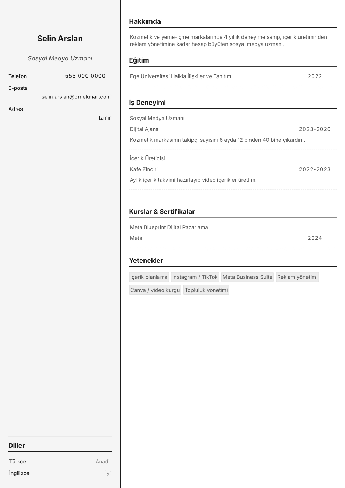

Sosyal Medya Uzmanı CV Örneği ve Hazırlama Rehberi
✨ Bu örneği MobilCV'de kendi bilgilerinle doldur: ücretsiz, üyeliksiz, telefondan.
🚀 Sosyal Medya Uzmanı CV'mi OluşturSosyal medya uzmanı CV'sinde yönettiğiniz hesaplar ve elde ettiğiniz büyüme en güçlü kanıttır. İşveren hangi platformlarda, hangi markalarla ve hangi sonuçlarla çalıştığınızı görmek ister.
Hesapları ve sonuçları yazın
Yönettiğiniz marka hesaplarını, takipçi artışını, etkileşim oranını ve kampanya sonuçlarını belirtin: "6 ayda takipçi sayısını 12 binden 40 bine çıkardım" gibi.
Platform ve araçları sıralayın
Instagram, TikTok, LinkedIn, X ve YouTube gibi platformları; Meta Business Suite, planlama araçları, Canva ve video düzenleme programlarını yazın.
İçerik örneklerini gösterin
Hazırladığınız içeriklerden örneklerin olduğu bir portfolyo ya da hesap bağlantısı ekleyin. Kriz yönetimi ve topluluk yönetimi deneyimini de belirtin.
Sosyal Medya Uzmanı CV'sinde Mutlaka Olması Gerekenler
- Yönetilen hesaplar ve sonuçlar
- Platformlar ve araçlar
- Reklam yönetimi deneyimi
- İçerik portfolyosu
Örnek İş Deneyimi Cümleleri
Deneyimlerinizi şu örneklerdeki gibi somut ve ölçülebilir yazın:
- "Bir kozmetik markasının Instagram hesabında 6 ayda takipçi sayısını 12 binden 40 bine çıkardım."
- "Aylık içerik takvimini planlayarak etkileşim oranını %2,1'den %4,3'e yükselttim."
CV'nizde Öne Çıkarabileceğiniz Beceriler
📄 Doldurulmuş Sosyal Medya Uzmanı CV Örneği
Bu örnek, MobilCV ile hazırlanmış gerçek bir PDF çıktısıdır. Kişi ve şirket bilgileri tamamen hayalidir; kendi bilgilerinle aynı şekilde doldurabilirsin.

✨ CV'ni hemen oluştur!
🚀 MobilCV ile CV Oluştur